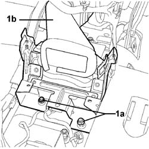
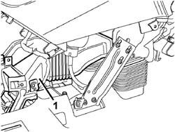

5010B56 DUCT BETWEEN CLIMATE CONTROL SYSTEM HOUSING AND AIR DUCT TO REAR SEATS - R.R.
- Path
- Procedures > 50 AUXILIARY UNITS > 5010 CLIMATE CONTROL - MISCELLANEOUS > 5010B CLIMATE CONTROL AIR PIPES AND DUCTS > 5010B56 DUCT BETWEEN CLIMATE CONTROL SYSTEM HOUSING AND AIR DUCT TO REAR SEATS - R.R.
- Kind
- repair procedure (removal / refitting; the operation number is the code)
- Applies to
- all engines; all production periods
- Interactive page
- https://sloeber94.github.io/elrnDB-fCrm/en/#/194000581
Applies to: all engines; all production periods
 Removing
Removing
 Refitting
RefittingTurn the ignition key to the OFF position.
Description | Connector | |
|---|---|---|
BATTERY |
Op. 7040A65 CONSOLE SIDE CLOSING (ONE) - R.R.
Op. 7040L28 TUNNEL SWITCH PANEL - R R
Op. 5520A10 IGNITION SWITCH ASSEMBLY - R+R
Op. 5010C32 AIR VENT ON TUNNEL COVER FOR REAR SEATS - R.R.
Op. 7040L20 TUNNEL COVER - R.R
1. Undo the nuts (1a) fixing the duct (1b) to the floor of the vehicle.

Applies to: all engines; all production periods
1 Release the duct between the climate control casing and the air duct to the rear seats from the climate control casing.

Applies to: all engines; all production periods
Refitting
Removing- Fit the duct on the climate control casing, check that the seal is correctly fitted.
- Tighten the nuts fixing the duct to the floor of the vehicle.
Op. 7040L20 TUNNEL COVER - R.R
Op. 5010C32 AIR VENT ON TUNNEL COVER FOR REAR SEATS - R.R.
Op. 5520A10 IGNITION SWITCH ASSEMBLY - R+R
Op. 7040L28 TUNNEL SWITCH PANEL - R R
Op. 7040A65 CONSOLE SIDE CLOSING (ONE) - R.R.
- Connect the negative battery terminal.
Description | Connector | |
|---|---|---|
BATTERY |
Topics linked from this page (6)
- 5010C32 AIR VENT ON TUNNEL COVER FOR REAR SEATS - R.R.
- 5520A10 IGNITION SWITCH ASSEMBLY - R+R
- 7040A65 CONSOLE SIDE CLOSING (ONE) - R.R.
- 7040L20 TUNNEL COVER - R.R
- 7040L28 TUNNEL SWITCH PANEL - R R
- A001 BATTERY
Topics that link to this page (8)
- 5040C10 AIR CONDITIONING CASING - R.R
- 5040C50 AIR CONDITIONING HEATER RADIATOR - R.R.
- 5040C64 A/C EVAPORATOR - R+R
- 5040D80 AIR CONDITIONER SYSTEM WIRING BUNDLE - R R OR REPLACE
- 5040D94 AIR CONDITIONING LEFT UPPER AIR DISTRIBUTION FLAP MOTOR (DEFROST) - R.R
- 5505C10 FRONT CROSSMEMBER WIRING - R.R
- 5505C31 BUILT-IN WIRING UNDER DASHBOARD - R.R.
- 7040A97 INSTRUMENT PANEL TRIM SUPPORTING CROSSMEMBER - R.R